> #' # Planejamento
#'
#' A seguir são apresentados códigos para a realização do planejamento de um experimento Quadrado Latino 5$\times$ 5.
#'
library(agricolae)
(Variedades <- LETTERS[1:5])
## [1] "A" "B" "C" "D" "E"
> (Planejamento <- design.lsd(Variedades,
serie=2))
## $parameters
## $parameters$design
## [1] "lsd"
##
## $parameters$trt
## [1] "A" "B" "C" "D" "E"
##
## $parameters$r
## [1] 5
##
## $parameters$serie
## [1] 2
##
## $parameters$seed
## [1] -287131376
##
## $parameters$kinds
## [1] "Super-Duper"
##
## $parameters[[7]]
## [1] TRUE
##
##
## $sketch
## [,1] [,2] [,3] [,4] [,5]
## [1,] "E" "C" "B" "A" "D"
## [2,] "B" "E" "D" "C" "A"
## [3,] "D" "B" "A" "E" "C"
## [4,] "C" "A" "E" "D" "B"
## [5,] "A" "D" "C" "B" "E"
##
## $book
## plots row col Variedades
## 1 101 1 1 E
## 2 102 1 2 C
## 3 103 1 3 B
## 4 104 1 4 A
## 5 105 1 5 D
## 6 201 2 1 B
## 7 202 2 2 E
## 8 203 2 3 D
## 9 204 2 4 C
## 10 205 2 5 A
## 11 301 3 1 D
## 12 302 3 2 B
## 13 303 3 3 A
## 14 304 3 4 E
## 15 305 3 5 C
## 16 401 4 1 C
## 17 402 4 2 A
## 18 403 4 3 E
## 19 404 4 4 D
## 20 405 4 5 B
## 21 501 5 1 A
## 22 502 5 2 D
## 23 503 5 3 C
## 24 504 5 4 B
## 25 505 5 5 E
> Plano <- Planejamento$book
library(agricolaeplotr)
##
## Type 'citation("agricolaeplotr")' for citing this R package in publications.
##
## Attaching package: 'agricolaeplotr'
## The following object is masked from 'package:base':
##
## summary
> plot_latin_square(Planejamento,
factor_name = "Variedades")
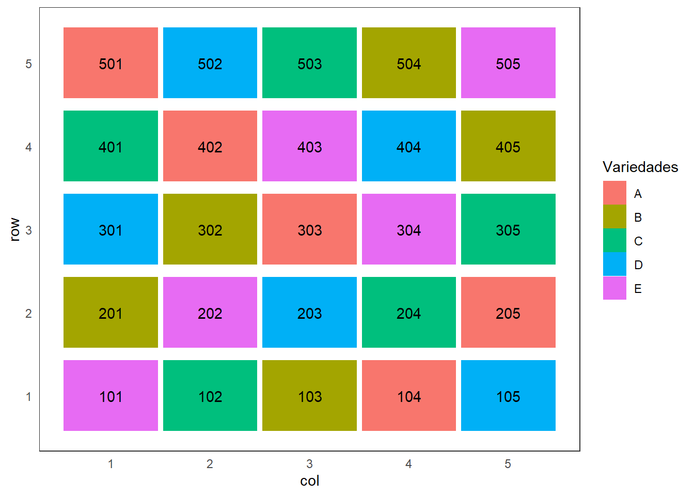
> # library(ggplot2)
# ggplot(Plano, aes(x = col, y = row, label = Variedades)) +
# geom_tile(aes(fill = Variedades), color="black") +
# geom_text() +
# xlab("Colunas") +
# ylab("Linhas")
#' Ainda, a partir de um Quadrado Latino sistemático, pode-se sortear as linhas
sample(1:5)
> #' e as Colunas
sample(1:5)
> #' # Análise dos dados
#' Considere os dados de um experimento instalado de acordo com o
#' delineamento quadrado latino, para avaliar a produção de cana-de-açúcar
#' em kg/parcela, de cinco variedades.
#'
#' ## Importando os dados
(dados <- read.csv2("cana1.csv"))
## linha coluna trat prod
## 1 1 2 A 518
## 2 2 3 A 524
## 3 3 5 A 420
## 4 4 4 A 486
## 5 5 1 A 515
## 6 1 3 B 458
## 7 2 4 B 550
## 8 3 2 B 384
## 9 4 1 B 494
## 10 5 5 B 318
## 11 1 4 C 583
## 12 2 1 C 724
## 13 3 3 C 556
## 14 4 5 C 501
## 15 5 2 C 660
## 16 1 1 D 432
## 17 2 5 D 400
## 18 3 4 D 297
## 19 4 2 D 500
## 20 5 3 D 438
## 21 1 5 E 331
## 22 2 2 E 478
## 23 3 1 E 489
## 24 4 3 E 313
## 25 5 4 E 394
> str(dados)
## 'data.frame': 25 obs. of 4 variables:
## $ linha : int 1 2 3 4 5 1 2 3 4 5 ...
## $ coluna: int 2 3 5 4 1 3 4 2 1 5 ...
## $ trat : chr "A" "A" "A" "A" ...
## $ prod : int 518 524 420 486 515 458 550 384 494 318 ...
> dados <- transform(dados,
linha = factor(linha),
coluna = factor(coluna))
#' ## Descritiva
#'
library(ggplot2)
## Warning: package 'ggplot2' was built under R version 4.3.3
> ggplot(dados, aes(x = coluna,
y = linha,
label = trat)) +
geom_tile(aes(fill = prod),
color="black") +
scale_fill_gradient(low="white",
high="red") +
geom_text() +
xlab("Colunas") +
ylab("Linhas")
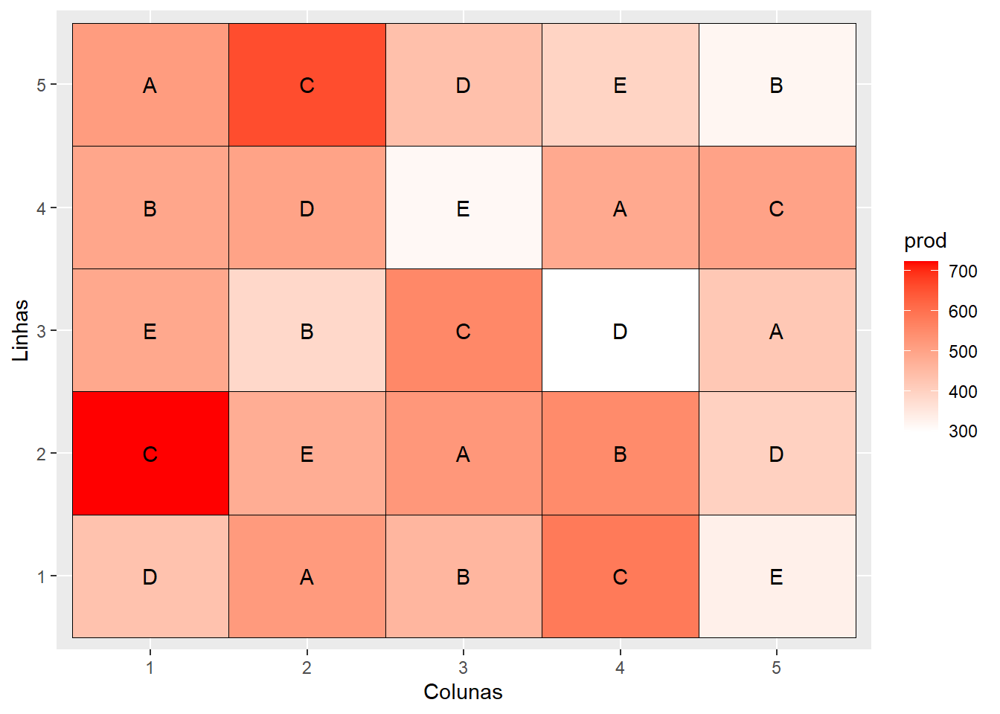
> ggplot(dados,
aes(x = trat,
y = prod)) +
geom_point()
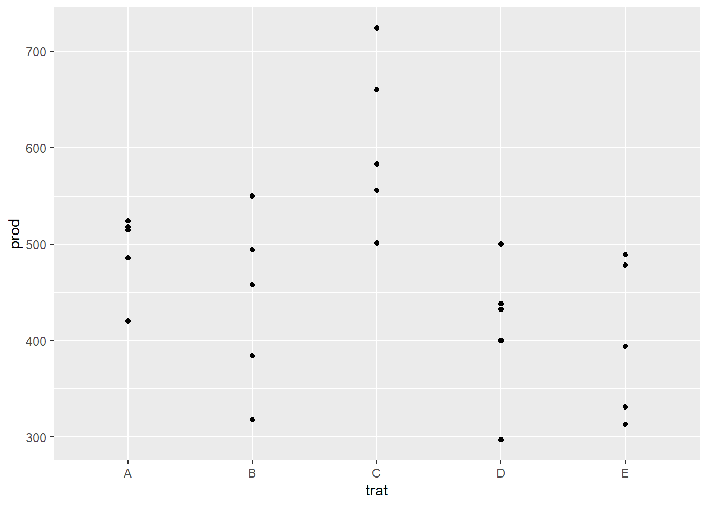
> #' ## Ajuste do modelo
#'
modelo <- aov(prod ~ linha + coluna + trat,
dados)
#' ## Verificando as pressuposições
#' Resíduos Studentizados
(res_stud <- rstandard(modelo))
## 1 2 3 4 5 6
## -0.16134123 -0.55657310 1.22467738 0.36924402 -0.87600707 0.97562716
## 7 8 9 10 11 12
## 1.43582865 -1.43366299 0.12560794 -1.10340075 -0.19382604 -0.15592709
## 13 14 15 16 17 18
## 0.14185034 -0.42121972 0.62912251 -0.96263323 -0.04223025 -1.80182419
## 19 20 21 22 23 24
## 1.64697992 1.15970775 0.34217334 -0.68109820 1.86895946 -1.72061216
## 25
## 0.19057756
> ggplot(NULL,
aes(x=res_stud)) +
geom_boxplot() +
labs(y = "Resíduos Studentizados")
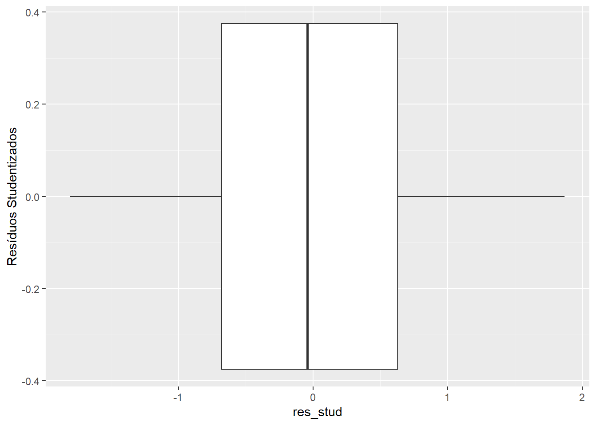
> #' - Normalidade
#'
# qqnorm(res_stud,
# xlab="Quantis da distribuição normal",
# ylab="Resíduos Studentizados");
# qqline(res_stud, col=2)
library(hnp)
## Carregando pacotes exigidos: MASS
> hnp(modelo,
print.on = TRUE)
## Gaussian model (aov object)
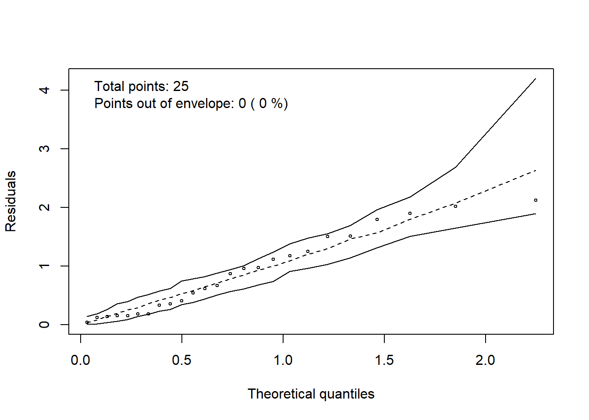
> #' $H_0$: Os erros seguem uma distribuição normal *versus*
#' $H_1:$ Os erros não seguem uma distribuição normal.
shapiro.test(res_stud)
##
## Shapiro-Wilk normality test
##
## data: res_stud
## W = 0.97701, p-value = 0.8202
> #' Ao nível de 5\% de significância não há evidências para afirmarmos que os erros não seguem a distribuição normal.
#' - Homogeneidade de variâncias
ggplot(dados,
aes(x = trat,
y = res_stud)) +
geom_point() +
xlab("Tratamentos") +
ylab("Resíduos Studentizados")
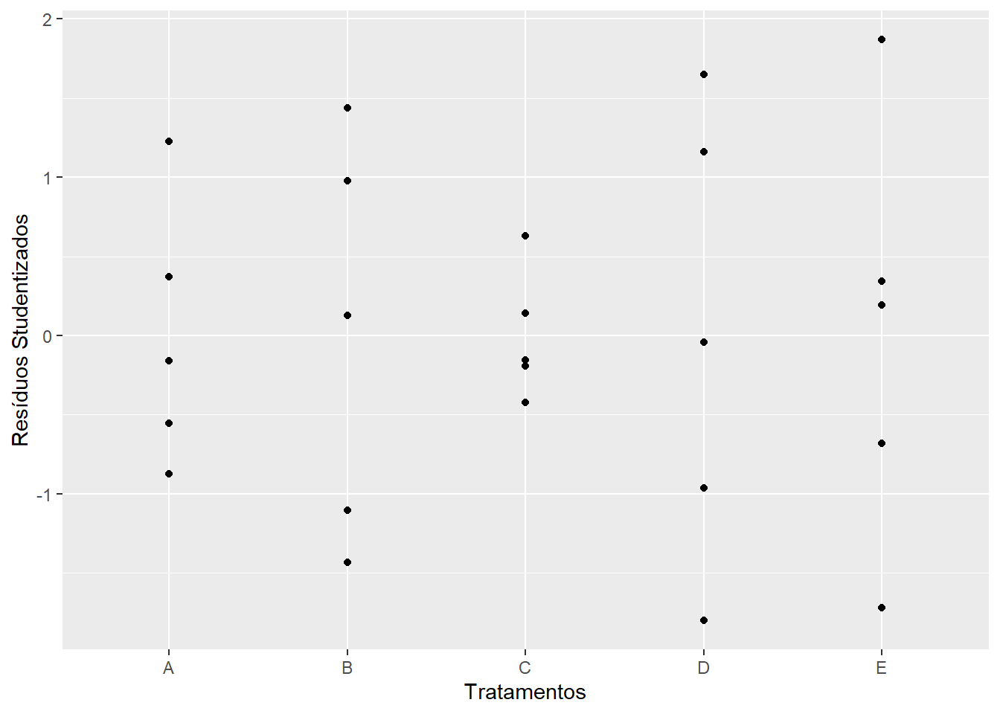
> ggplot(dados,
aes(x = coluna,
y = res_stud)) +
geom_point() +
xlab("Colunas") +
ylab("Resíduos Studentizados")
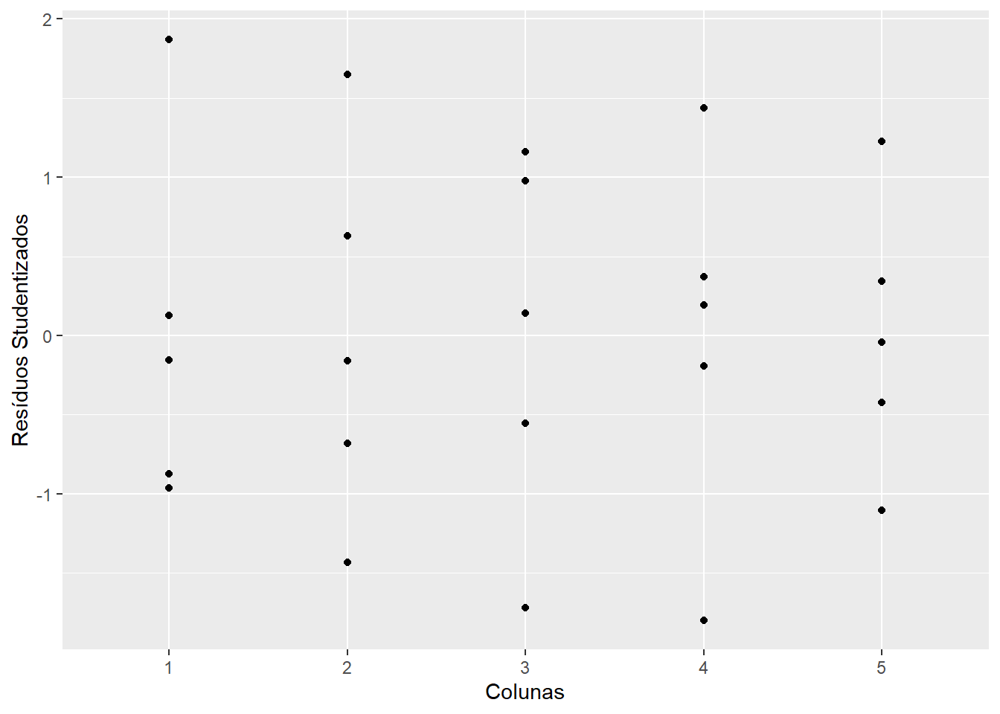
> ggplot(dados,
aes(x = linha,
y = res_stud)) +
geom_point() +
xlab("Linhas") +
ylab("Resíduos Studentizados")
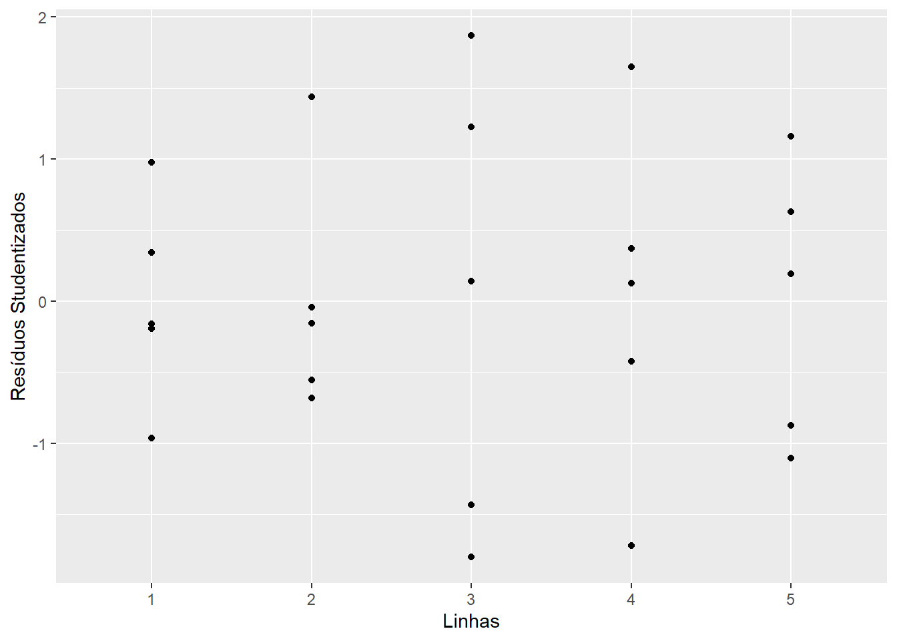
> #' $H_0$: Há homogeneidade de variâncias *versus*
#' $H_1:$ Não há homogeneidade de variâncias.
library(lmtest)
## Carregando pacotes exigidos: zoo
##
## Attaching package: 'zoo'
## The following objects are masked from 'package:base':
##
## as.Date, as.Date.numeric
> bptest(modelo)
##
## studentized Breusch-Pagan test
##
## data: modelo
## BP = 14.538, df = 12, p-value = 0.2677
> #' Ao nível de 5\% de significância não há evidências para afirmarmos que não há homogeneidade de variâncias.
#' - Relação entre média e variância
ggplot(NULL,
aes(x = fitted(modelo),
y = res_stud)) +
geom_point() +
xlab("Valores preditos") +
ylab("Resíduos Studentizados") +
geom_hline(yintercept = 0,
col = "red")
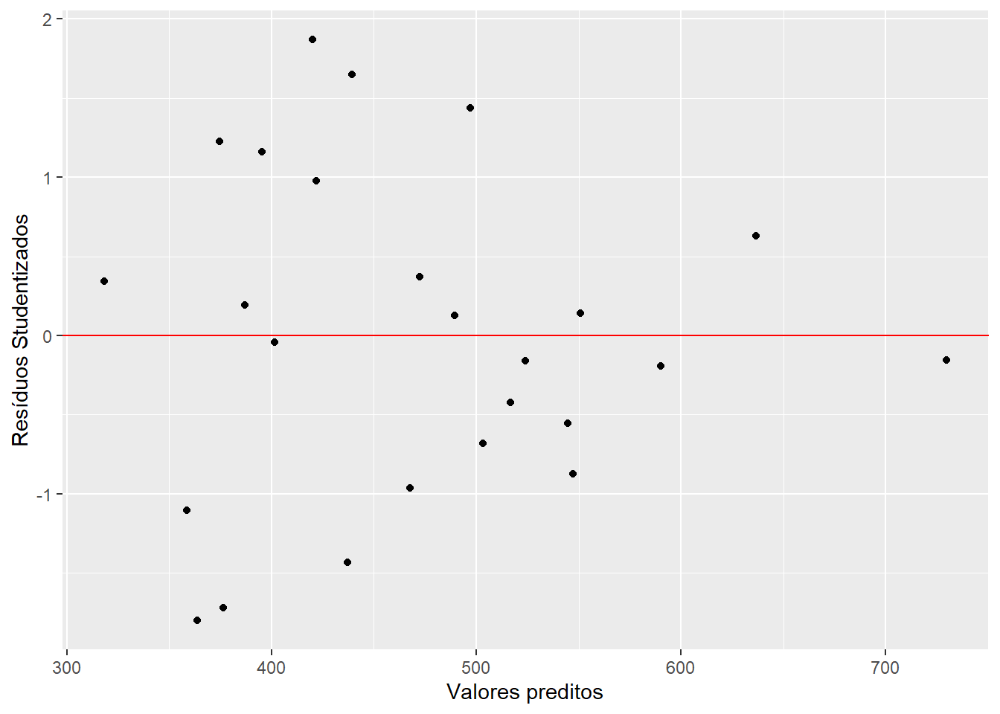
> library(MASS)
boxcox(modelo)
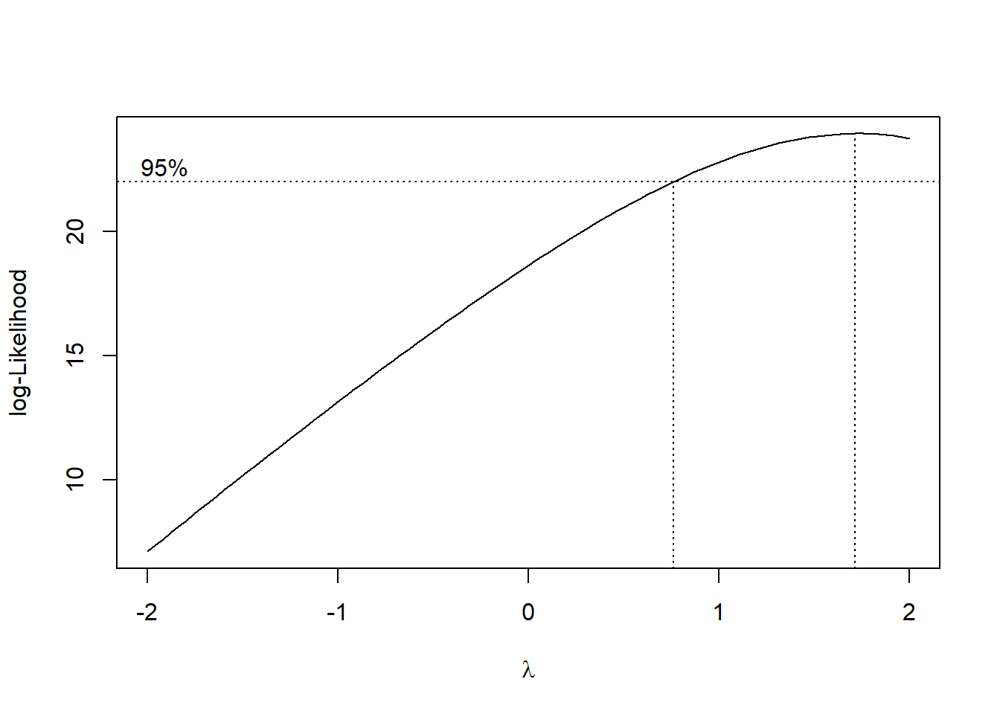
> boxcox(modelo,
lambda = seq(0, 3, 0.01))
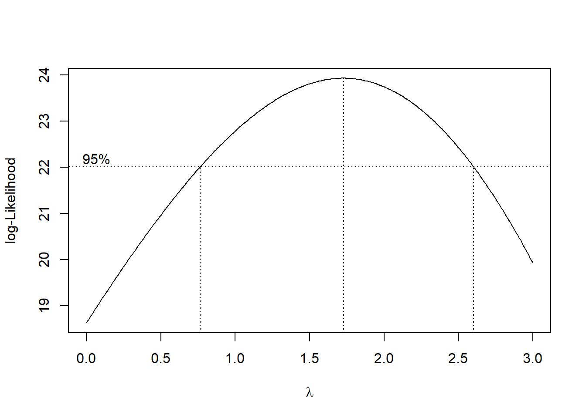
> #' Como $\lambda = 1$ pertence ao intervalo de confiança e as
#' pressuposições de normalidade dos erros e homogeneidade de
#' variâncias foram atendidas, não há necessidade de
#' transformação dos dados.
#' ## ANOVA
#' $H_0$: $\mu_1 = \mu_2 = \mu_3 = \mu_4 = \mu_5$ *versus*
#' $H_1:$ Pelo menos duas médias de tratamentos diferem entre si.
anova(modelo)
## Analysis of Variance Table
##
## Response: prod
## Df Sum Sq Mean Sq F value Pr(>F)
## linha 4 30481 7620 2.6804 0.0831343 .
## coluna 4 55641 13910 4.8930 0.0142293 *
## trat 4 137488 34372 12.0905 0.0003585 ***
## Residuals 12 34115 2843
## ---
## Signif. codes: 0 '***' 0.001 '**' 0.01 '*' 0.05 '.' 0.1 ' ' 1
> #' Assumindo-se o nível de 5\% de significância, há evidências para rejeitarmos $H_0$...
#' ## ANOVA e comparações múltiplas pela biblioteca ExpDes.pt
library(ExpDes.pt)
##
## Attaching package: 'ExpDes.pt'
## The following object is masked from 'package:MASS':
##
## ginv
## The following objects are masked from 'package:agricolae':
##
## lastC, order.group, tapply.stat
> with(dados,
dql(trat,
linha,
coluna,
prod,
quali = TRUE,
mcomp = "tukey",
sigT = 0.05,
sigF = 0.05))
## ------------------------------------------------------------------------
## Quadro da analise de variancia
## ------------------------------------------------------------------------
## GL SQ QM Fc Pr>Fc
## Tratamento 4 137488 34372 12.0905 0.000358
## Linha 4 30481 7620 2.6804 0.083134
## Coluna 4 55641 13910 4.8930 0.014229
## Residuo 12 34115 2843
## Total 24 257724
## ------------------------------------------------------------------------
## CV = 11.33 %
##
## ------------------------------------------------------------------------
## Teste de normalidade dos residuos (Shapiro-Wilk)
## valor-p: 0.8201574
## De acordo com o teste de Shapiro-Wilk a 5% de significancia, os residuos podem ser considerados normais.
## ------------------------------------------------------------------------
##
## Teste de Tukey
## ------------------------------------------------------------------------
## Grupos Tratamentos Medias
## a C 604.8
## b A 492.6
## b B 440.8
## b D 413.4
## b E 401
## ------------------------------------------------------------------------